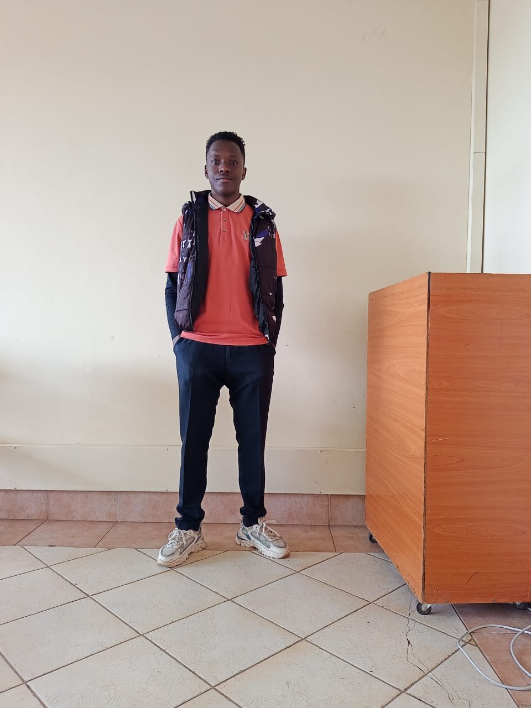

Curiosity
I want to understand what is happening underneath the surface, not just copy the result.
I’m Fredrick Musyoki. I’m building my path in technology with a strong focus on learning, practical progress, and becoming genuinely good at what I do.

I’ve always liked the idea of understanding how things work rather than only using them. That is a big part of why I’m drawn toward technology. I want to learn the fundamentals, experiment, build things, make mistakes, and then get better.
Right now, the evidence I have includes Networking Basics through Cisco Networking Academy and a KSEF Certificate of Merit for position 2 in Mathematical Science at Mbooni West Sub-County in 2023.
I’m not trying to make this portfolio look more complete than my actual journey is. I’d rather keep adding real work until the website has no choice but to speak for itself.
I want to understand what is happening underneath the surface, not just copy the result.
I’m trying to build the habit of learning, practicing, and improving even when nobody is watching.
I’d rather say “I’m still learning this” than pretend I know something I can’t actually explain.
The clothes change. The setting changes. I’m still the same person behind the screen, learning and figuring things out.